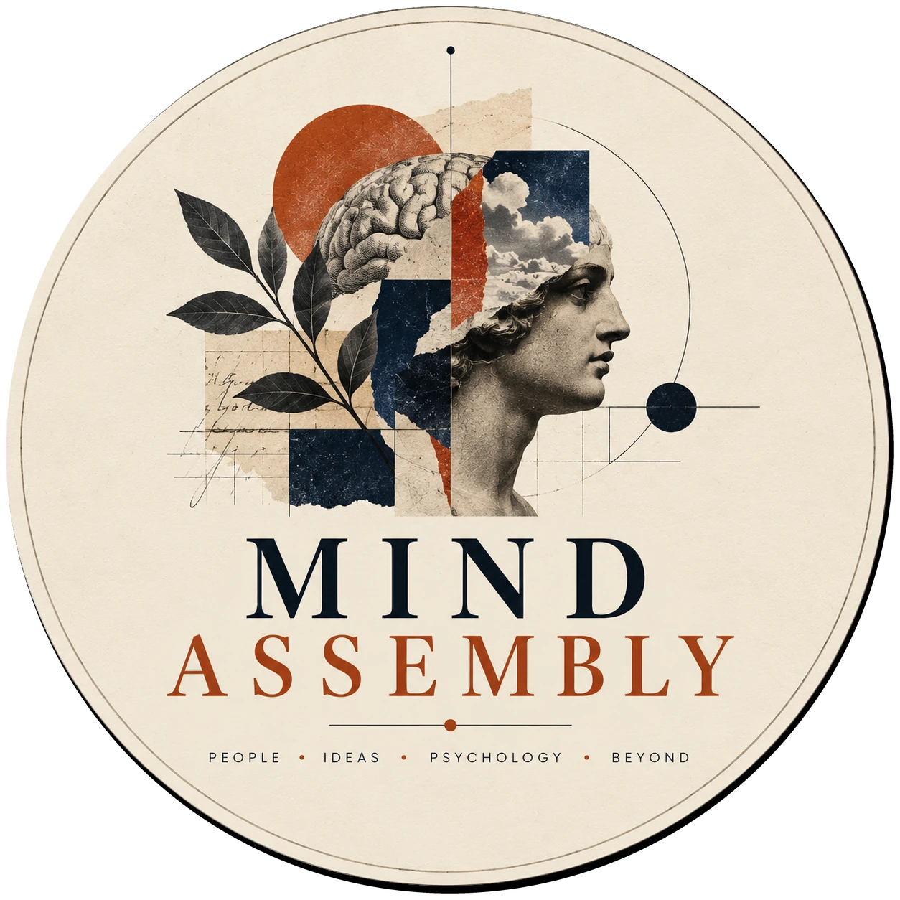

01
Body image in the age of the feed
What is the relationship between social media experiences and body-image concerns? How can we discuss body dysmorphic disorder without reducing a complex condition to a simple online trend?
Mind Assembly brings psychology students and emerging thinkers together to explore ideas, examine evidence and turn shared curiosity into collaborative work. We're still building—and that's part of the invitation.

An ongoing inquiryGood questions make room for better conversations.
Think / Question / CollaborateOur first selected initiative is a self-discovery experience. The important part is not a label, but what it helps you reflect on—and what it cannot tell you.
Curious about how you describe your preferences and patterns? Explore an independently hosted personality tool, designed for reflection and self-discovery. It is not a substitute for psychological assessment or professional advice.
Explore the personality tool ↗This is not an official or standardized psychometric test. This tool is created for research and self-discovery purposes only and should not be considered as a clinical or professional diagnosis. The tool opens on a separate website; review that website's privacy information before entering personal data.
These are themes raised in our recent discussions—not published findings or officially launched research studies.
What is the relationship between social media experiences and body-image concerns? How can we discuss body dysmorphic disorder without reducing a complex condition to a simple online trend?
Can someone communicate how they feel through the posts they like, share or engage with? Where does meaningful communication end and interpretation begin?
How do we turn an interesting psychological phenomenon into a researchable, ethically responsible question? We're exploring what collaborative inquiry could look like.
These topics emerged in team conversations. The external reading links offer background only; they are not Mind Assembly publications or evidence of completed studies.
Bring observations, contradictions and difficult questions about psychological phenomena into thoughtful discussion.
Read research critically, distinguish findings from speculation and acknowledge what remains unknown.
Contribute to discussions, educational content, outreach or future collaborative projects as the organisation develops.
A short view of discussions and decisions documented during our early formation—not a list of completed programmes.
Members agreed to begin with a personality exploration project and discussed functional teams.
Outreach, LinkedIn presence and member coordination became priorities for discussion.
The team discussed a reel, body dysmorphic disorder content and assessment integrations.
Members discussed body image, indirect emotional signalling and possible research collaboration.
These entries summarise past discussions. Exploring an idea does not mean a study, publication or event has been formally approved.
Communities are built by people who show up, contribute and help one another move ideas forward. Meet the individuals who have consented to being recognised here.
Names are displayed without unconfirmed roles, credentials or affiliations.
Get in touch with the team ↗Whether you're interested in psychological research, writing, discussion, design or community-building, there may be a way to help shape what Mind Assembly becomes. We're an early-stage community, so opportunities are evolving.